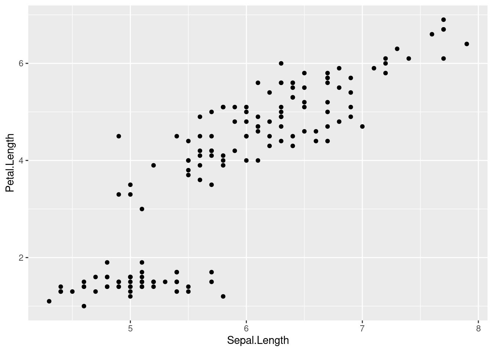

1 Week 1: Installing and configuring R and RStudio
1.1 Goals
- You’ll install the software you’ll need for this part of the class:
R,RStudio, andtidyverse/ggplot2. - You’ll tinker with the
RandRStudiosetting. - You’ll draw and save your first graph, a scatterplot, to see if everything is working as it should be.
1.2 Software
- Download the free program
Rfrom https://r-project.org (Download, CRAN) and install it. - Download and install the free program
RStudio: https://www.rstudio.com/. Pick the free desktop version. RStudio offers a tidier user interface forR. - Open
RStudio. You should see four frames as in Figure 1.1 below. If you only see three frames, clickFile,New File,R Script.
Figure 1.1: RStudio. Top left: Script editor. This is where you can enter and edit commands and comments. Bottom left: R console. Commands that you copy from the script editor to this console will be evaluated by R. Top right: Here you’ll find a list of the objects currently available in R’s working memory (none at the moment). Bottom right: Plots (none at the moment), help pages etc.
Go to
Tools > Global Options... > General.UntickRestore .RData into workspace at startupand setSave workspace to .RData on exittoNever. This will help ensure that when other people run the same code as you, the results will be the same, too.Go to
Tools > Global Options...> Code > Saving. SetDefault text encodingtoUTF-8.Go to
Tools > Global Options...> Code > Editing. TickUse native pipe operator. |>.Enter the following line into the script editor (top left). Brackets, quotation marks, capitalisation, and the like all matter to computers, so pay attention to them.
install.packages("tidyverse")Now select this line in the script editor. Then click
Code,Run Line(s). (Shortcut for Windows/Linux: ctrl + enter; Mac: command + enter.) This relays the commandinstall.packages("tidyverse")toR. This command adds thetidyversesuite to your installation of R; thetidyverseis a collection of useful add-ons that enable you to work more flexibly and more efficiently with datasets. One of these add-ons is theggplot2package, which features state-of-the-art functions for drawing graphics.You may need to select a server from a pop-up window. Any server will work.
Wait as the add-on package is being installed.
Install the
herepackage using the same set of commands, i.e., run the line below. Theherepackage facilitates working in a directory structure.
install.packages("here")Do the same with the
devtoolspackage.Click on
File > New Project... > New Directory. Navigate to somewhere on your computer where you want to create a new directory and call this directory (for instance,quantmeth_plots). You will use this directory to store the data and scripts that you’ll need for drawing the graphs in as well for saving the graphs themselves to.When you’re done, close RStudio. Navigate to the directory you’ve just created. You should find an
.Rprojfile there. Double-click it. If all is well, RStudio should fire up.Create the following subdirectories in the directory you’re currently in:
data,scriptsandfigures.
Now we’re good to go!
1.3 Drawing a first scatterplot
I’ll assume that you’ve opened your newly created R project.
If you haven’t, navigate to the directory you’ve just created and double-click
the .Rproj file.
Enter the commands below into the script editor (top left); do not enter them directly into the console (bottom left). While nothing terrible will happen if you do enter commands directly into the console, entering them into the script editor first is a good habit to get into: it’s much easier to spot errors, document your analysis, make tweaks to your code, and reuse old code in the editor than in the console.
As for documenting your analysis,
be sure to comment your R scripts.
When you’re still starting out learning R,
I suggest you use comments to
keep track of pretty much every command.
Once you’ve gained some more familiarity with R,
you’ll be better able to make sense of what a line
of R code accomplishes and your comments may become
sparser.
You can enter comments by prefixing a line with #.
Everything on the same line after # will be ignored by R
but will be visible to you and other people you’d like to share
your scripts with (e.g., when asking for help).
- After you’ve installed the
tidyversesuite and thehereanddevtoolspackages, you still need to load them in order to make their functions available. While you only need to install a package or suite once, you need to load its functions every time you start a new session. When you run this command, a number of messages will appear about packages that were attached and ‘conflicts’. You can safely ignore these. Loading theherepackage should make the current path appear at the prompt.
# Load tidyverse package
# (this is a comment, by the way -- use them liberally at first)
library(tidyverse)## ── Attaching packages ─────────────────────────────────────── tidyverse 1.3.1 ──## ✔ ggplot2 3.3.6 ✔ purrr 0.3.4
## ✔ tibble 3.1.7 ✔ dplyr 1.0.9
## ✔ tidyr 1.2.0 ✔ stringr 1.4.0
## ✔ readr 2.1.2 ✔ forcats 0.5.1## ── Conflicts ────────────────────────────────────────── tidyverse_conflicts() ──
## ✖ dplyr::filter() masks stats::filter()
## ✖ dplyr::lag() masks stats::lag()# Load here package
library(here)## here() starts at /home/jan/ownCloud/QuantMeth_GraphsRcomes with a number of pre-installed datasets, among which theirisdataset. This dataset contains measurements of 150 flowers. (Later we’ll work with linguistic datasets of our own.) Load this pre-installed dataset usingdata():
# Load iris dataset
data(iris)- Show this dataset by entering its name. Take note of how this dataset
is laid out: it contains measurements of 150 flowers, with each flower
being represented by one row. For each flower, 5 pieces of information (‘variables’)
are available, among which 4 numeric ones (
Sepal.Length,Sepal.Width,Petal.Length,Petal.Width) and one non-numeric (Species). Datasets constructed in this way (1 row per observation, different columns per variable) tend to be easier to analyse than datasets with other lay-outs (e.g., one row per variable, different columns for separate observations).
# Show dataset
iris## Sepal.Length Sepal.Width Petal.Length Petal.Width Species
## 1 5.1 3.5 1.4 0.2 setosa
## 2 4.9 3.0 1.4 0.2 setosa
## 3 4.7 3.2 1.3 0.2 setosa
## 4 4.6 3.1 1.5 0.2 setosa
## 5 5.0 3.6 1.4 0.2 setosa
## 6 5.4 3.9 1.7 0.4 setosa
## 7 4.6 3.4 1.4 0.3 setosa
## 8 5.0 3.4 1.5 0.2 setosa
## 9 4.4 2.9 1.4 0.2 setosa
## 10 4.9 3.1 1.5 0.1 setosa
## 11 5.4 3.7 1.5 0.2 setosa
## 12 4.8 3.4 1.6 0.2 setosa
## 13 4.8 3.0 1.4 0.1 setosa
## 14 4.3 3.0 1.1 0.1 setosa
## 15 5.8 4.0 1.2 0.2 setosa
## 16 5.7 4.4 1.5 0.4 setosa
## 17 5.4 3.9 1.3 0.4 setosa
## 18 5.1 3.5 1.4 0.3 setosa
## 19 5.7 3.8 1.7 0.3 setosa
## 20 5.1 3.8 1.5 0.3 setosa
## 21 5.4 3.4 1.7 0.2 setosa
## 22 5.1 3.7 1.5 0.4 setosa
## 23 4.6 3.6 1.0 0.2 setosa
## 24 5.1 3.3 1.7 0.5 setosa
## 25 4.8 3.4 1.9 0.2 setosa
## 26 5.0 3.0 1.6 0.2 setosa
## 27 5.0 3.4 1.6 0.4 setosa
## 28 5.2 3.5 1.5 0.2 setosa
## 29 5.2 3.4 1.4 0.2 setosa
## 30 4.7 3.2 1.6 0.2 setosa
## 31 4.8 3.1 1.6 0.2 setosa
## 32 5.4 3.4 1.5 0.4 setosa
## 33 5.2 4.1 1.5 0.1 setosa
## 34 5.5 4.2 1.4 0.2 setosa
## 35 4.9 3.1 1.5 0.2 setosa
## 36 5.0 3.2 1.2 0.2 setosa
## 37 5.5 3.5 1.3 0.2 setosa
## 38 4.9 3.6 1.4 0.1 setosa
## 39 4.4 3.0 1.3 0.2 setosa
## 40 5.1 3.4 1.5 0.2 setosa
## 41 5.0 3.5 1.3 0.3 setosa
## 42 4.5 2.3 1.3 0.3 setosa
## 43 4.4 3.2 1.3 0.2 setosa
## 44 5.0 3.5 1.6 0.6 setosa
## 45 5.1 3.8 1.9 0.4 setosa
## 46 4.8 3.0 1.4 0.3 setosa
## 47 5.1 3.8 1.6 0.2 setosa
## 48 4.6 3.2 1.4 0.2 setosa
## 49 5.3 3.7 1.5 0.2 setosa
## 50 5.0 3.3 1.4 0.2 setosa
## 51 7.0 3.2 4.7 1.4 versicolor
## 52 6.4 3.2 4.5 1.5 versicolor
## 53 6.9 3.1 4.9 1.5 versicolor
## 54 5.5 2.3 4.0 1.3 versicolor
## 55 6.5 2.8 4.6 1.5 versicolor
## 56 5.7 2.8 4.5 1.3 versicolor
## 57 6.3 3.3 4.7 1.6 versicolor
## 58 4.9 2.4 3.3 1.0 versicolor
## 59 6.6 2.9 4.6 1.3 versicolor
## 60 5.2 2.7 3.9 1.4 versicolor
## 61 5.0 2.0 3.5 1.0 versicolor
## 62 5.9 3.0 4.2 1.5 versicolor
## 63 6.0 2.2 4.0 1.0 versicolor
## 64 6.1 2.9 4.7 1.4 versicolor
## 65 5.6 2.9 3.6 1.3 versicolor
## 66 6.7 3.1 4.4 1.4 versicolor
## 67 5.6 3.0 4.5 1.5 versicolor
## 68 5.8 2.7 4.1 1.0 versicolor
## 69 6.2 2.2 4.5 1.5 versicolor
## 70 5.6 2.5 3.9 1.1 versicolor
## 71 5.9 3.2 4.8 1.8 versicolor
## 72 6.1 2.8 4.0 1.3 versicolor
## 73 6.3 2.5 4.9 1.5 versicolor
## 74 6.1 2.8 4.7 1.2 versicolor
## 75 6.4 2.9 4.3 1.3 versicolor
## 76 6.6 3.0 4.4 1.4 versicolor
## 77 6.8 2.8 4.8 1.4 versicolor
## 78 6.7 3.0 5.0 1.7 versicolor
## 79 6.0 2.9 4.5 1.5 versicolor
## 80 5.7 2.6 3.5 1.0 versicolor
## 81 5.5 2.4 3.8 1.1 versicolor
## 82 5.5 2.4 3.7 1.0 versicolor
## 83 5.8 2.7 3.9 1.2 versicolor
## 84 6.0 2.7 5.1 1.6 versicolor
## 85 5.4 3.0 4.5 1.5 versicolor
## 86 6.0 3.4 4.5 1.6 versicolor
## 87 6.7 3.1 4.7 1.5 versicolor
## 88 6.3 2.3 4.4 1.3 versicolor
## 89 5.6 3.0 4.1 1.3 versicolor
## 90 5.5 2.5 4.0 1.3 versicolor
## 91 5.5 2.6 4.4 1.2 versicolor
## 92 6.1 3.0 4.6 1.4 versicolor
## 93 5.8 2.6 4.0 1.2 versicolor
## 94 5.0 2.3 3.3 1.0 versicolor
## 95 5.6 2.7 4.2 1.3 versicolor
## 96 5.7 3.0 4.2 1.2 versicolor
## 97 5.7 2.9 4.2 1.3 versicolor
## 98 6.2 2.9 4.3 1.3 versicolor
## 99 5.1 2.5 3.0 1.1 versicolor
## 100 5.7 2.8 4.1 1.3 versicolor
## 101 6.3 3.3 6.0 2.5 virginica
## 102 5.8 2.7 5.1 1.9 virginica
## 103 7.1 3.0 5.9 2.1 virginica
## 104 6.3 2.9 5.6 1.8 virginica
## 105 6.5 3.0 5.8 2.2 virginica
## 106 7.6 3.0 6.6 2.1 virginica
## 107 4.9 2.5 4.5 1.7 virginica
## 108 7.3 2.9 6.3 1.8 virginica
## 109 6.7 2.5 5.8 1.8 virginica
## 110 7.2 3.6 6.1 2.5 virginica
## 111 6.5 3.2 5.1 2.0 virginica
## 112 6.4 2.7 5.3 1.9 virginica
## 113 6.8 3.0 5.5 2.1 virginica
## 114 5.7 2.5 5.0 2.0 virginica
## 115 5.8 2.8 5.1 2.4 virginica
## 116 6.4 3.2 5.3 2.3 virginica
## 117 6.5 3.0 5.5 1.8 virginica
## 118 7.7 3.8 6.7 2.2 virginica
## 119 7.7 2.6 6.9 2.3 virginica
## 120 6.0 2.2 5.0 1.5 virginica
## 121 6.9 3.2 5.7 2.3 virginica
## 122 5.6 2.8 4.9 2.0 virginica
## 123 7.7 2.8 6.7 2.0 virginica
## 124 6.3 2.7 4.9 1.8 virginica
## 125 6.7 3.3 5.7 2.1 virginica
## 126 7.2 3.2 6.0 1.8 virginica
## 127 6.2 2.8 4.8 1.8 virginica
## 128 6.1 3.0 4.9 1.8 virginica
## 129 6.4 2.8 5.6 2.1 virginica
## 130 7.2 3.0 5.8 1.6 virginica
## 131 7.4 2.8 6.1 1.9 virginica
## 132 7.9 3.8 6.4 2.0 virginica
## 133 6.4 2.8 5.6 2.2 virginica
## 134 6.3 2.8 5.1 1.5 virginica
## 135 6.1 2.6 5.6 1.4 virginica
## 136 7.7 3.0 6.1 2.3 virginica
## 137 6.3 3.4 5.6 2.4 virginica
## 138 6.4 3.1 5.5 1.8 virginica
## 139 6.0 3.0 4.8 1.8 virginica
## 140 6.9 3.1 5.4 2.1 virginica
## 141 6.7 3.1 5.6 2.4 virginica
## 142 6.9 3.1 5.1 2.3 virginica
## 143 5.8 2.7 5.1 1.9 virginica
## 144 6.8 3.2 5.9 2.3 virginica
## 145 6.7 3.3 5.7 2.5 virginica
## 146 6.7 3.0 5.2 2.3 virginica
## 147 6.3 2.5 5.0 1.9 virginica
## 148 6.5 3.0 5.2 2.0 virginica
## 149 6.2 3.4 5.4 2.3 virginica
## 150 5.9 3.0 5.1 1.8 virginica- Draw a scatterplot using the following command,
which plots the flowers’
Sepal.Lengthalong the x axis and theirPetal.Lengthalong the y axis. Pay particular attention to the brackets, commas, pluses, capitalisation, etc.: The command won’t work if you typepetal.lengthinstead ofPetal.Lengthor if you forget a bracket or the plus sign. The indentations aren’t important, but they’re useful to show the command’s structure. Emulate the coding style of this tutorial as best you can.
Explanation: Line 1 specifies the name of the dataset as it’s known
in R (data =). Lines 2–3 specify the variables to be plotted
(the plot’s aesthetics, aes) and how they should be plotted
(along the x and y axes). Line 4 specifies that the data should
be plotted as points.
ggplot(data = iris, # Specify the name of the dataset
aes(x = Sepal.Length, # Variable for x axis (aes = 'aesthetics')
y = Petal.Length)) + # Variable for y axis (don't forget the '+')
geom_point() # Plot the data as points
- If you’ve successfully run the commands above, you should see a graph displayed
in the bottom right pane. Now save this figure to your computer using the following command. The figure will be saved in the subdirectory
figures, and it will be a.pngfile.
# This saves the plot to the figures subdirectory.
ggsave(here("figures", "01_first_scatterplot.png"))- Add the following lines. They output the R, RStudio and package versions used as well as some additional information that can be useful when figuring out why something isn’t working as it should.
# Software versions used
devtools::session_info()- Click
File > Compile Report.... Select HTML and store the script in thescriptsdirectory as01_first_scatterplot.R. If you’ve followed this tutorial to the letter, you will now find both an.Rfile and a corresponding.htmlfile in your script directory. The.Rfile contains the command that you used to draw the plot, and the.htmlreport nicely keeps track of both the commands and their output. If the report compiles without hiccoughs, anyone with the same data and the same software versions will be able to reproduce your analysis.
1.4 Exercise
Create a new script with which you draw a scatterplot in which the
Petal.Widthvariable from theirisdataset is plotting along the x-axis and theSepal.Widthvariable is plotted along the y-axis. You don’t have to reinstall all the packages again, but you will need to load them. Give the script and the figure sensible names (something starting with01_would be good; use02_,03_etc. in the following weeks), and save them to the appropriate subdirectories.Compile a HTML report.
Hand in both the HTML report and the figure via Moodle.